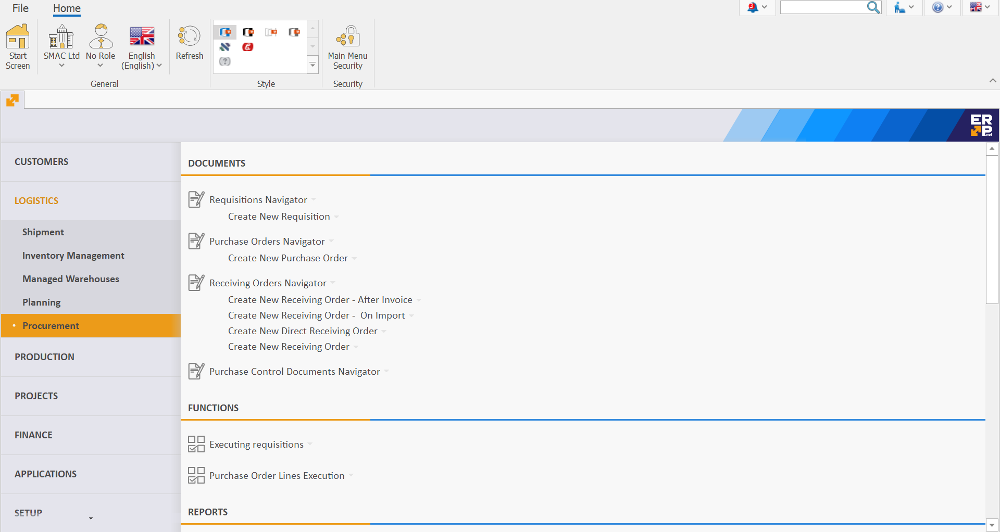
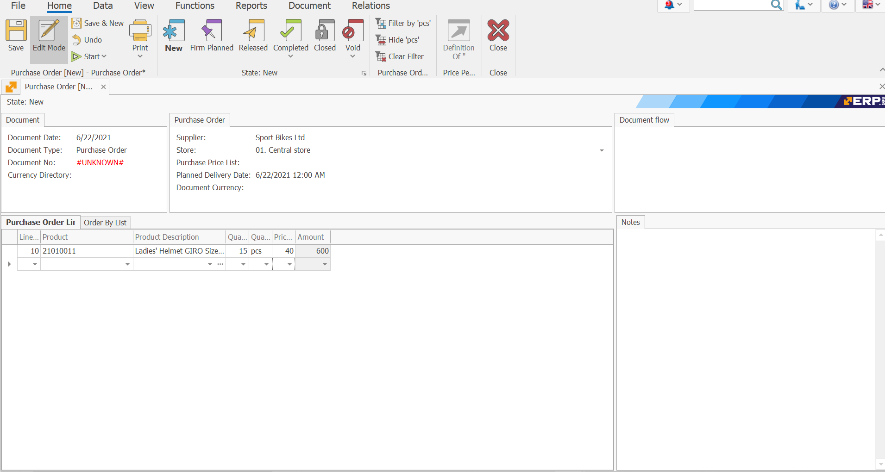

Purchase Order
The Purchase Order document is used to obtain goods, products and materials by purchasing them from an external supplier.
To create a Purchase Order go to Logistics >> Procurement >> Create New Purchase Order.

Let's fill in the following fields:
- Supplier - this is the supplier from which you plan to buy the goods.

- Store - this is the store in which the goods will be credited.
If the field is left blank, a store can be found for each item in the Purchase Order Lines panel.
- Document No - here, indicate the number of the purchase order, if available.

- Product code - from the dropdown, select the product for purchase.
Product Name - if you choose the code, this name is generated automatically.
Quantity - this is the purchased quantity.

- Measurement Unit Name - here, indicate the unit of measure of the purchased quantity.

- Unit price - this is the price unit of the purchased quantity.

- Amount to pay - by default, this is a product of the unit price and the quantity.
Other values lead to a recalculation of the unit price.

After filling in the data, release the document.

According to the standard operating model, the system is set to continue with a Receiving Order.
To view all issued Purchase Orders, go to Logistics >> Procurement >> Purchase Orders Navigator.
Press the Display Button.
A list of all Purchase orders will appear.

If you double-click the selected order, you can open and view it.